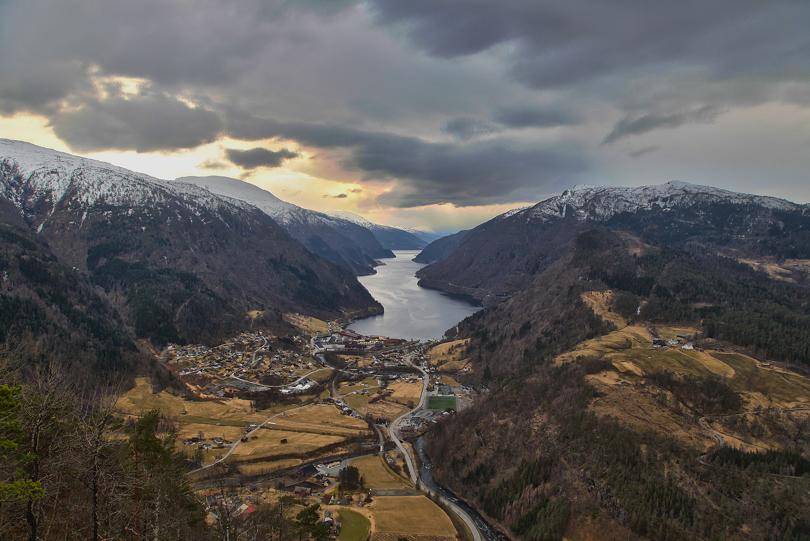

Utkikspunktet, Granvin i Hardanger

Eg kjem frå Granvin, ei flott bygd eg er stolt av å kome frå. Eg er titt og ofte tilbake, mykje grunna den flotte naturen. Er det ei utsikt eg så godt som alltid får med meg er det sjølvaste "utsiktspunktet" over nedre Granvin og Granvinsfjorden. Mange spør meg korleis du kjem deg dit, så her er ein liten forklaring. Det er nemleg veldig lett.


Det er mange alternative ruter. Eg vel å beskrive to av dei her. Hugs; dersom du ikkje er heilt sikker så er det berre å utforske litt. Det er slik du blir kjent. Det var forøvrig sånn eg fant dette utkikspunktet første gongen. Eg og ein kompis leita og leita etter ein plass der me slapp masse tre som "øydelagte" utsikta over heimbygda.
Alternativ 1: Lettvint
Køyr til Haugseåsen langrennsanlegg og parker der. Følg den forholdsvis nye vegen vidare ut i Haugseåsen. Etter at du har gått ned ein lang bakke kjem du til ein parkeringsplass der du kan gå rett fram (forsøk gjerne den óg), og ein til venstre. Gå til venstre. Ved ei grind er mitt forslag å fylgje gjerdet innover. Etter ca. 500 meter kjem du til ein opning som heiter Akselstreet. Gå over gjerdet rett fram etter at du har kryssa treet, og følg ein flott sti gjennom granfeltet. Etter ei stund kjem du ut i ein ny lysning; opp til venstre ligg det ei gamal hytte ("vakthytta", brukt i krigen som utkikspunkt), og til høgre kan du gå eit par hundre meter på ein nokonlunde sti til du ser grombygda (draumfagre bygdi i indre Hardanger) i all si prakt.
PS: Under alternativ 2 kan du sjå deler av ruta frå ca. 1.7 km og utover. Hald muspeikaren over ruta på kartet nede for å sjå dette talet.
Alternativ 2: Gjer deg fortjent til det
Den mest spennande ruta synes eg er å gå frå Granvinsvatnet, eller Hausnes. Det er vanskeleg å beskrive stien steg for steg, så eg lar GPS-spora ta for seg detaljane (last dei ned). Men i korte steg er det å gå til Haugse via Hausnesskogen, over bakkane på Haugse og rett mot telefonmasta (mm.) på ein knaus over. Ikkje gå opp til masta (sjølv om dette er eit anna alternativ), men hald deg under knausane på fin sti (ca. 500 meter) heilt til stien plutseleg går rett opp. Her er det litt sleipt, men det er nok av ting å halde seg fast i. Ta rett til venstre når det flatar litt ut og gå ut på utkikspunktet.
Merk at returen her går via deler av alternativ 1 (Akselstreet, under vakthytta) og innom eit hogstfelt over Haugse. Igjen, utforsk - så blir du kjent.
God tur!